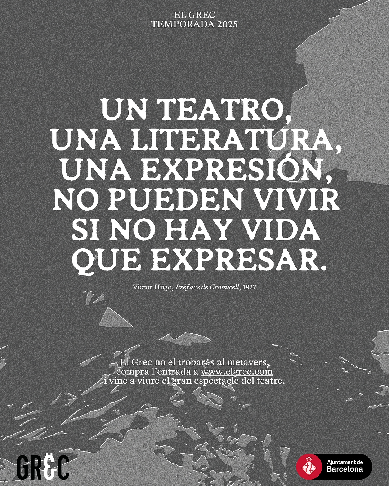
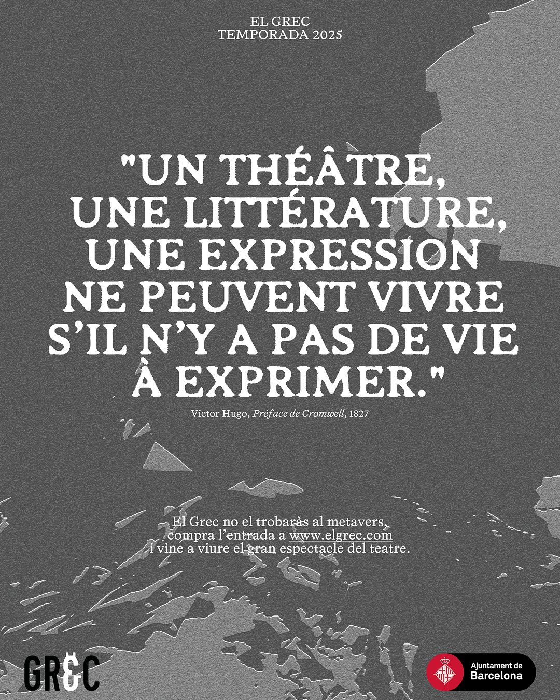
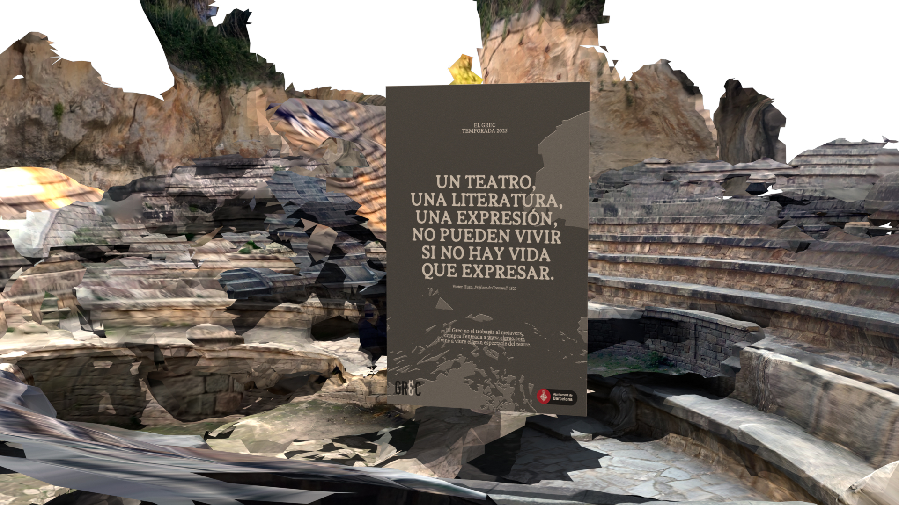
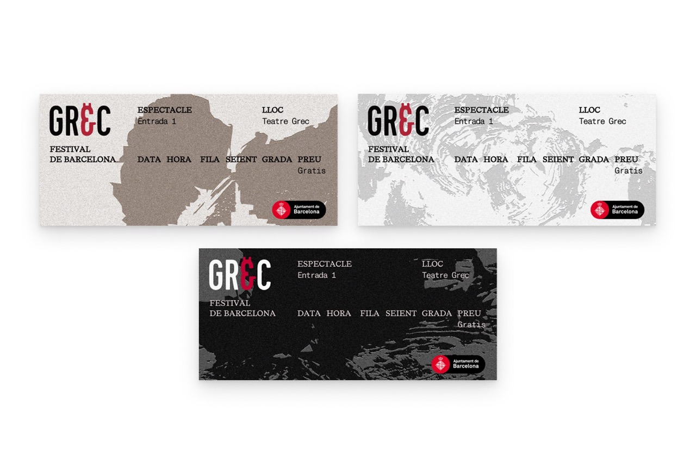

[Proj. 06]
LA PRÒXIMA GRAN TRAGÈDIA
IDENTITY AND CAMPAIGN, 2025
Creative Direction
Mariana Esteves, Bruno Rodríguez, Martina Casimiro, Àngel Paniagua
3D Design
Mariana Esteves
Context
Developed at BAU Barcelona
The Teatre Grec of Barcelona is as much a physical space as it is a story: there never was an original Greek theatre in Montjuïc, and its construction in 1929 — nearly two thousand years after the splendor of classical Greece — is, at its core, a performative and political act.
LA PRÒXIMA GRAN TRAGÈDIA is a campaign born from an academic briefing where El Grec would have to enter the metaverse. We decided to contest this premise and adopt a guerrilla marketing strategy. First, different posters on the street would invite the public to access a "new metaverse experience" with a commanding message: "La pròxima gran tragèdia serà que t'ho perdis" or "The next great tragedy would be to miss it".
To then contrast with the expectation created, the digital space was designed to question the logic behind wanting to turn every experience digital. Entering a world in shambles, a sign at its center invites the user to, actually, leave the space. "You won't find El Grec in the metaverse. Buy your tickets and come live the great spectacle of theatre". Special discounts would also take place to further captivate audiences.
[Proj. 06]
[IMG]







[IMG]